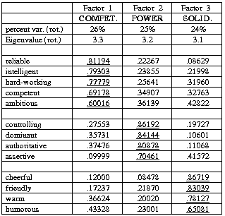
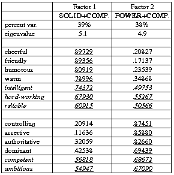
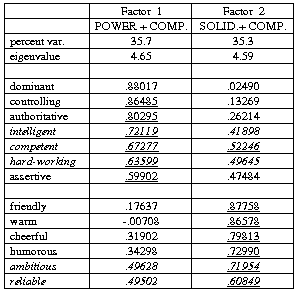
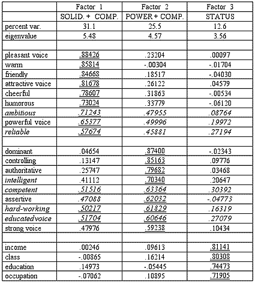

Evaluating English Accents WorldWide:
Cross-cultural Comparisons
(Adapted from a paper by Donn Bayard and James Green presented at the Eighth
International Conference on Language and Social Psychology, Hong Kong, 12 July 2002.)
One of the questions which has long intrigued anthropologists and social
psychologists (among others) is the construct of the personality. Do all human
societies share an essentially identical view of the different elements which are
combined to make up an individual's personality, or are there noteworthy
differences in the various constellations of traits which different cultures view
as significant? Anthropological studies like Benedict's famous Patterns of
Culture (1934) or Phillips' Thai Peasant Personality (1965) are rather uncommon
at present, but social psychologists have taken up the debate, some arguing that
personality configurations and values are more or less universal across cultural
boundaries—the etic approach (e.g., Schwartz and Bilsky 1990, McCrae and Costa
1997); and those who believe considerable cultural variation exists—the emic
approach1 (e.g., Chinese Cultural Connection 1987, Cheung et al. 2001). Bayard's
anthropological background and an earlier study he carried out on Thai accents
and attitudes (Bayard 1995) suggest to him that the emic approach is more
probably correct.
One of the benefits of the EEAWW project is the accumulation of a large body of
data from representative samples of listeners in different national and ethnic
groups. All of these have been exposed to the identical stimulus of eight
voices, scored on 22 personality, voice, and status traits using essentially
identical questionnaires. This provides the basis for some intriguing
cross-cultural comparisons of the overall dimensions used to construct cultural
models of personality, and variability in the relative importance of these
dimensions.
We have only just begun to explore the EEAWW data, but here is an example from
the nine-nation sample of university student evaluations available to date (March
2002). We employ a technique called principal components or factor analysis to
examine the relationships (correlations) between the various personality traits
used in evaluation to see how these are grouped into larger overall dimensions or
factors. If we limit ourselves to the 13 personality traits alone, omitting the
five voice traits and four fixed-option status traits, PC analysis of the sample
of 682 listeners drawn from six Western nations2 provides three clear-cut
factors.
A.
PC ANALYSIS OF 13 PERSONALITY TRAIT MEANS:
SIX NATIONAL/ETHNIC GROUPS (N = 682)
(TRAITS LOADING AT >± 0.5 UNDERLINED)

It is clear the basic dimensions distinguished are those traditionally found in
such studies, and are usually called power (also called control or status),
solidarity (also known as affiliation, social attractiveness, etc.), and competence
(basic dependability,
intelligence, ambition, etc.). The first
dimension or factor is competence; the second factor in importance is what
we've called power (controlling, dominant, assertive, etc.), and the third
factor is clearly solidarity (friendly, warm, humorous, etc.). Each of these
three factors accounts for about
one-quarter of the variance in the sample. The remaining quarter of the variance is presumably due to other features
of speaker evaluation not included in the traits used here.
As stated, these three factors—with the same or different labels—occur again
and again in studies like this carried out in North America and Europe. But what
sort of patterns emerge in non-Western societies? Bayard's study of 62 Thai
listening to four Thai accents (1995) produced three factors which could rather
be labelled self-esteem, esteem for others, and status. Our samples from Hong
Kong and Singapore enable us to analyse the evaluations of a fairly large sample
of Chinese university students (46 of the 56 from the National University of
Singapore and all 75 of those from Hong Kong Baptist University). When the same
technique of factor analysis is applied to this sample of 121, a somewhat
different picture emerges, as shown below.
B.
PC ANALYSIS OF 13 PERSONALITY TRAIT MEANS:
HONG KONG AND SINGAPORE ETHNIC CHINESE (N = 121)
(COMPETENCE TRAITS ITALICISED;
TRAITS LOADING AT >± 0.5 UNDERLINED)

Here only two factors emerge, if we use the conventionally accepted cutoff point
for generating factors.3 These appear to be solidarity and power, with the
traits assigned to a distinct competence dimension in the Western sample distributed
between the two.
Solidarity contains intelligent, hard-working, and reliable—all traits
apparently valued in friends and acquaintances; while power also has competent
and ambitious included along with the usual traits. All of these distributed
factors also show high values on the other factor, as would be expected. The two factors
together account for approximately three-quarters of the variance, about the same as the three
factors in the Western sample.
It should be noted that this pattern also emerges when each of the two Chinese
samples are analysed separately. When all 22 traits are analysed for the total
university sample, a fourth status factor emerges consisting of the four
fixed-option traits (income, occupation, education, social class); the five voice
traits are variously assigned to the other three factors. But here again, when the Chinese
subsample alone is considered, only three factors emerge: solidarity with the
same three competence factors (plus pleasant, attractive, and educated voice),
power with the same two competence factors (plus strong and powerful voice), and a
third status factor. The implication we take from this is that competence per se
is not viewed as a clear-cut dimension separate from the other two, as it appears
to be in most Western societies. Instead, it forms an integral part of the
solidarity and power dimensions.
New Data: Japan
Since the text above was posted in April, we have completed processing of a large
sample of questionnaires from International Christian University, Tokyo (see Japan). Instead of producing the four
factors found in the Western data, these responses follow the same
patterns as the Singapore and Hong Kong Chinese.
C.
PC ANALYSIS OF 13 PERSONALITY TRAIT MEANS:
133 NATIVE-BORN JAPANESE STUDENTS,
INTERNATIONAL CHRISTIAN UNIVERSITY.
(COMPETENCE TRAITS ITALICISED;
TRAITS LOADING AT >± 0.5 UNDERLINED)

In this case Factor 1 (35.7% of variance after rotation) contains the four
power traits plus competent, intelligent, and hard-working. Factor
2 (35.3% of variance) contains the four solidarity variables plus
ambitious and reliable.
The parallel pattern is found in the full analysis of all 22 traits, here presented in full:
D.
PC ANALYSIS OF 22 PERSONALITY TRAIT MEANS:
133 NATIVE-BORN JAPANESE STUDENTS,
INTERNATIONAL CHRISTIAN UNIVERSITY.
(COMPETENCE TRAITS ITALICISED;
TRAITS LOADING AT >± 0.5 UNDERLINED)

Here, as with the 121 Chinese, we find only three factors rather than the four we
have encountered in all the non-East Asian samples. Factor 1 is clearly
solidarity, with the addition of the same competence traits (ambitious and
reliable, plus pleasant, attractive, and powerful voice).
Factor 2 is power plus intelligent and hard-working, as well as
educated and strong voice. Factor 3 contains only the four status
traits of income, class, education, and occupation.
Thus while the distribution of the competence traits is not identical, the
resemblance in compression of factors between Chinese and Japanese students is
in marked contrast to the other student samples, and does suggest some actual
amount of cross-cultural variation in the grouping of personality traits to make
culturally significant personality dimensions. It would be interesting to see
what the analysis of a body of Korean student opinion would produce.
At the very least these results indicate the potential the sort of data
gathered by the EEAWW Project has for exploratory cross-cultural studies.
NOTES
1. These terms are apparently borrowed from anthropology, where they were in turn borrowed from the linguistic concepts of phonetic and phonemic in the late 1950s.
2. Drawn from New Zealand, Australia, USA (Cleveland, Ohio), Sweden, Finland, and Germany.
3. An eigenvalue of less than 1.0 is the conventional cutoff point. Note that both matrices
underwent varimax rotation, and the eigenvalues and variance percentages given are for
the rotated matrices.
REFERENCES
Bayard, Donn. 1995. Thai accents, Thai attitudes: an exploratory study in Bangkok
and Chiang Mai contrasted with New Zealand English results. Phasa lae
Phasasat/Language and Linguistics 13(2):53-75.
Benedict, Ruth. 1934. Patterns of Culture. New York: Houghton Mifflin.
Cheung, Fanny M., Kwok Leung, Jian-Xin Zhang, Hai-Fa Sun, Yi-Qun Gan, Wei-Zhen Song,
and Dong Xie. 2001. Indigenous Chinese personality constructs: is the Five-Factor model
complete? Journal of Cross-Cultural Psychology 32(4): 407-33.
Chinese Cultural Connection. 1987. Chinese values and the search for culture-free
dimensions of culture. Journal of Cross-Cultural Psychology 18: 143-64.
McCrae, Robert R., and Paul T. Costa, Jr. 1997. Personality trait structure as a
human universal. American Psychologist 52(5): 509-16.
Phillips, Herbert P. 1965. Thai Peasant Personality: the Patterning of
Interpersonal Behavior in the Village of Bang Chan. Berkeley and Los Angeles:
University of California Press.
Schwartz, Shalom H., and Wolfgang Bilsky. 1990. Toward a theory of the universal
content and structure of values: extensions and cross-cultural replications.
Journal of Personality and Social Psychology 58(5): 878-91.
Created by:
Owen Baxter,
Modified: 18 Jun 2002, Made with Macintosh